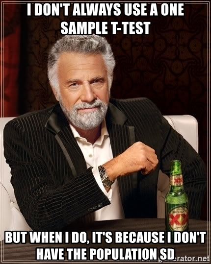

Lab 10: One Sample T Methods
Computer Lab 10
Introduction
In this lab you will use R to compare means using the 1-sample t test, and how to make a new variable in R.
One Sample t test
The 1-sample t test is commonly used to test for a statistical difference between a sample mean and a known or hypothesized value of the mean in the population. The test has the null hypothesis that the population mean is equal to \(\mu_{0}\) (\(H_{0}: \mu=\mu_{0}\)) and the alternative hypothesis that it is not equal to \(\mu_{0}\) (\(H_{A}: \mu\neq \mu_{0}\)).
Before using the 1-sample t test there are some assumptions that need to be considered. If the assumptions are not met the results of the test may not be reliable.
- The data needs to have come from a random sample
- The data needs to be normal or meet the requirements of the central limit theorem (CLT)
For this lab we will use a data set called “NurseDiet”. The dietary data is from a random sample of 173 American nurses. Data on the participants nutrition were recorded during four, 1-week intervals spaced evenly over year. There are three variables in the data set which record the mean of the total: saturated fat, fat, and calories consumed.
Exercise 1: Checking the data
Instructions In data analysis you always check the data before performing any analysis. Use the interactive plot and summary app to get a feel for the variables and answer the quiz questions.
Quiz: Questions 1-2
Question 1
For the nurses in the sample what is the mean total intake of calories?
Question 2
For the nurses in the sample what is the highest mean total intake of saturated fat?
Exercise 2: Checking the Assumptions
Before using any statistical method it is important to make sure the assumptions are satisfied. In the case of some assumption it is as simple as knowing how the sample was collected. In the case of the nurse nutrition data we know that it was from a random sample. As far as the normality assumption we definitely meet the sample size requirement to use the CLT. Despite meeting the requirements of the CLT it is still a good idea to check and see if the variable of interest is normally distributed when you are doing an analysis.
The two common methods for visually checking for normality are with histograms and Q-Q plots. A Q-Q plot allows us to see if our assumption of normality is plausible. It makes it clear how the assumption is violated and also where in the variables distribution there are departures from the normality assumption. We are going to use 2 functions to make a Q-Q plot for the Calories variable. The qqnorm() function creates the base plot and then we will add a reference line to make it easier to see any departures from normality using the qqline().
I know it has been a while since you have had to write any R code so if you need to review the first few labs, I have also added an R cheat sheet that you can view by clicking on the tab at the datacamp has a free introduction to R course. As a quick reminder the basic syntax is “data_name”$“variable_name” the dollar sign lets R know to look inside the data set for the variable.
Instructions Finish the code in the chunk below to produce a Q-Q plot of the Calories data. Click the run code button Use the output to answer the quiz questions.
Quiz: Question 3
Question 3
Between which values of the Theoretical Quantiles is the data normal?
Exercise 3: 1-sample t Test
Now that we know the assumptions for the test are meet we can apply the test to answer the following question.
Dietary standards for total fat and saturated fat are based on the assumption that 2000 calories of food are consumed each day. This exercise will take you through the steps to test the null hypothesis that the mean caloric intake of the nurses is equal to 2000 calories against the two-sided alternative that the mean caloric intake of the nurses is not equal to 2000 calories : \[\alpha=0.05\] \[\mu_{0}=2000\]
\[H_{0}: \mu=2000\] \[H_{A}: \mu\neq 2000\]
We will test the hypothesis using the t.test() function in R. There are three options in the function that need to be specified. The general form is t.test(x, mu=#, alternative= type), where “x” is the data, “#” is the value of the null (\(\mu_{0}\)), and finally “type” which can be one of these three “two.sided”, “less”, or “greater”.
Instructions: Complete the code below and click the run code button. Use the output to answer the quiz questions. If you are having a hard time check out the example from STHDA t tests in R
Quiz: Questions 4-7
Question 4
Which values match the results of your test?
Question 5
What was the mean of the total calorie intake?
Question 6
What is the conclusion from the results of the test?
Question 7
What is the 95% confidence interval for the mean total intake of calories?
Making a new variable in R
In many cases data collected from a sample is used to calculate a new value. Body mass index (BMI) is not directly measured but calculated using this formula \(\frac{weight(lb))}{height(in))^{2}}\times703\). In the “NurseDiet” data set there is no variable that quantifies the excess fat in the diet of those nurses sampled. For a daily consumption of 2000 calories, the daily recommended maximum intake of total fat is 65 grams. We will use this formula to calculate excess fat: \[excess~fat = total~fat-\left (65\times\frac{total~calories}{2000} \right )\]
Exercise 4: New variable
Instructions: Complete the code to calculate a new variable. Use the results to answer the quiz question.
Quiz: Question 8
Question 8
What is the mean and max of the new ExcFat variable?
Exercise 5: t Test for New Variable
We believe that the nurses consume excess fat in their diets as a result of their working schedules.To test whether we have evidence for this claim, carry out a test of the following hypotheses:
\[\alpha=0.05\] \[\mu_{0}=0\]
\[H_{0}: \mu=0\] \[H_{A}: \mu\neq 0\]
Before we do the test we have to check the normality assumption Instructions: Write the code required to make a Q-Q plot of the new variables ExcFat. Use the example code in the chunk as a guide. Use the plot to answer the quiz question.
Instructions: Once you have checked to see if the variable is normal. Complete the code to test the hypothesis for the new variable ExcFat. Use the results to answer the quiz question.
Quiz: Questions 9-13
Question 9
Between which values of the Theoretical Quantiles is the ExcFat data normal?
Question 10
Which values match the results of your test?
Question 11
What was the mean of the total excess fat?
Question 12
What is the conclusion from the results of the test?
Question 13
What is the 95% confidence interval for the mean total intake of calories?
Summary
In this lab, you completed 5 exercises and answered 13 quiz questions.
The lab covered 2 topics:
- 1-sample t-tests
- Making new variables in R
You are done with lab! Well done! Don’t forget to record your answers and take the eLC quiz to get credit.
